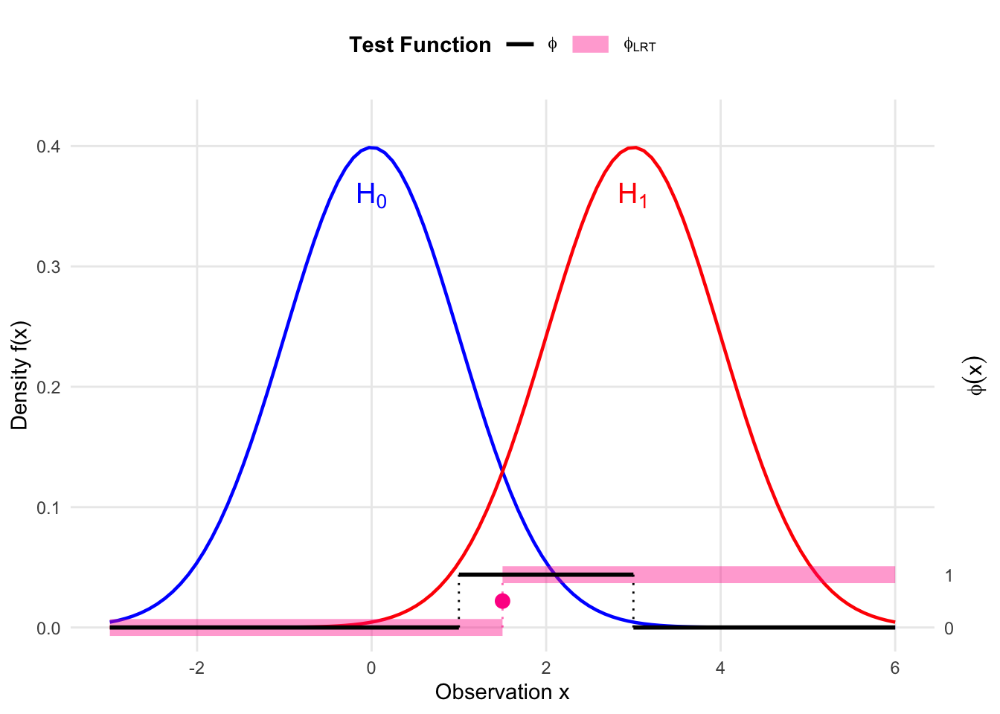

4 Hypothesis Testing
4.1 General Terminologies
4.1.1 Hypothesis Testing
We formulate the problem of hypothesis testing as deciding between two competing claims about a parameter \(\theta\):
\[ H_0: \theta \in \Theta_0 \quad \text{(Null Hypothesis)} \]
\[ H_1: \theta \in \Theta_1 \quad \text{(Alternative Hypothesis)} \]
Definition 4.1 (Simple and Composite Hypotheses) A hypothesis is called simple if it specifies a single value for the parameter (e.g., \(\Theta_0\) contains only one point). It is called composite if it specifies more than one value.
Example 4.1 (Normal Mean Test) Let \(X_1, \dots, X_n \overset{iid}{\sim} N(\mu, \sigma^2)\).
- If \(\sigma^2\) is known, \(H_0: \mu = \mu_0\) is a simple hypothesis.
- If \(\sigma^2\) is unknown, \(H_0: \mu = \mu_0\) is a composite hypothesis (since \(\sigma^2\) can vary).
4.1.2 Test Functions and Size
A test is defined by a critical region \(C_\alpha\) such that we reject \(H_0\) if the data \(x \in C_\alpha\). Equivalently, we can define a test function \(\phi(x)\) representing the probability of rejecting \(H_0\) given data \(x\).
- A non-randomized test is given as follows:
\[ \phi(x) = I(x \in C_\alpha) = \begin{cases} 1 & \text{if } x \in C_\alpha \text{ (Reject } H_0 \text{)} \\ 0 & \text{otherwise} \end{cases} \]
A randomized test, \(\phi(x)\) can take values in \([0, 1]\), which can be expressed typically as follows:
\[ \phi(x) = \begin{cases} 1 & \text{if } x \in C_1 \\ \gamma & \text{if } x \in C_* \\ 0 & \text{otherwise} \end{cases} \]
where:
- \(C_1\) is the region where we strictly reject \(H_0\).
- \(C_*\) is the boundary region (often where \(T(x) = k\)) where we reject \(H_0\) with probability \(\gamma\).
More generally, \(\phi(x)\) is just a function of \(x\) with values in \([0,1]\), which represents the probability that we will reject \(H_0\).
Example 4.2 (Randomized Test for Binomial) Let \(X \sim \text{Bin}(n=10, \theta)\). Consider testing \(H_0: \theta = 1/2\) vs \(H_1: \theta > 1/2\) with target size \(\alpha = 0.05\).
Suppose we choose a critical region \(X \ge k\).
- If \(k=9\), \(P(X \ge 9 | \theta=0.5) \approx 0.0107\).
- If \(k=8\), \(P(X \ge 8 | \theta=0.5) \approx 0.0547\).
Since we cannot achieve exactly 0.05 with a non-randomized test (the survival function jumps over 0.05), we must use a randomized test function.
The randomized test is defined as:
\[ \phi(x) = \begin{cases} 1 & \text{if } x \in C_1 \text{ (i.e., } x \ge 9) \\ \gamma & \text{if } x \in C_* \text{ (i.e., } x = 8) \\ 0 & \text{otherwise} \end{cases} \]
From the figure, we see that \(\alpha = 0.05\) lies between \(P(X \ge 9)\) and \(P(X \ge 8)\). We always reject the “tail” where probabilities are strictly less than \(\alpha\) (here \(x \ge 9\)). At the boundary \(x=8\), we cannot reject with probability 1 (which would give total size 0.0547), nor with probability 0 (which would give total size 0.0107).
We choose \(\gamma\) to bridge this gap:
\[ \begin{aligned} \alpha &= P(X \ge 9) + \gamma \cdot P(X = 8) \\ 0.05 &= 0.01074 + \gamma \cdot (P(X \ge 8) - P(X \ge 9)) \\ 0.05 &= 0.01074 + \gamma \cdot (0.05469 - 0.01074) \end{aligned} \]
Solving for \(\gamma\):
\[ \gamma = \frac{0.05 - 0.01074}{0.04395} \approx \frac{39}{44} \approx 0.89 \]
4.2 Power and Size Function
Definition 4.2 (Size of a Test) The size of a test \(\phi(x)\) is the maximum probability of rejecting the null hypothesis when it is true:
\[ \text{Size}(\phi) = \sup_{\theta \in \Theta_0} W_\phi(\theta) = \sup_{\theta \in \Theta_0} E_\theta[\phi(X)] \]
4.2.1 Power Definitions
We distinguish between the power function varying over parameters and the power metric of a specific test.
1. Power Function (\(W_\phi(\theta)\)) The probability of rejecting \(H_0\) as a function of the parameter \(\theta\):
\[ W_\phi(\theta) = E_\theta[\phi(X)] \]
2. Power of the Test (\(\text{Power}(\phi)\)) In the context of a specific alternative hypothesis (e.g., \(H_1: \theta = \theta_1\)), we define the power as a scalar functional of \(\phi\):
\[ \text{Power}(\phi) = E_{\theta_1}[\phi(X)] \]
Ideally, we want:
- \(W_\phi(\theta) \le \text{Size}(\phi)\) for all \(\theta \in \Theta_0\) (Control Type I error).
- \(\text{Power}(\phi)\) to be as large as possible (Maximize sensitivity to \(H_1\)).
Code
library(ggplot2)
# 1. Define Parameters
mu0 <- 0
mu1 <- 3
sigma <- 1
c_val <- 1.5 # Critical value
gamma_val <- 0.5 # Randomization constant
# 2. Scaling Constants
max_dens <- dnorm(mu0, mean = mu0, sd = sigma)
y_limit <- max_dens * 1.1
phi_scale <- 0.1 * y_limit
# 3. Define the Test Function phi(x) (Single Test)
# Step function: 0 -> 1 at c_val
df_phi <- data.frame(
x_start = c(-3, c_val),
x_end = c(c_val, 6),
y_start = c(0, phi_scale),
y_end = c(0, phi_scale)
)
ggplot() +
# --- Layer 1: Densities (Solid Lines, No Fill) ---
# H0: Normal(0, 1) - Blue (Cool)
stat_function(fun = dnorm, args = list(mean = mu0, sd = sigma),
color = "blue", size = 0.8) +
# H1: Normal(3, 1) - Red (Hot)
stat_function(fun = dnorm, args = list(mean = mu1, sd = sigma),
color = "red", size = 0.8) +
# --- Layer 2: Test Function phi(x) (Thick Pink Line) ---
# The horizontal segments
geom_segment(data = df_phi,
aes(x = x_start, xend = x_end, y = y_start, yend = y_end),
color = "deeppink", size = 2.5, alpha = 0.5) +
# The vertical threshold line
geom_segment(aes(x = c_val, xend = c_val, y = 0, yend = phi_scale),
linetype = "dotted", color = "deeppink", size = 0.8) +
# Points at discontinuity
geom_point(aes(x = c_val, y = gamma_val * phi_scale),
color = "deeppink", size = 3) +
geom_point(aes(x = c_val, y = 0), size = 3, shape = 21, fill = "white", color = "deeppink") +
geom_point(aes(x = c_val, y = phi_scale), size = 3, shape = 21, fill = "white", color = "deeppink") +
# --- Layer 3: Annotations ---
# Gamma label
annotate("text", x = c_val + 0.2, y = gamma_val * phi_scale,
label = expression(gamma), hjust = 0, fontface = "bold", color = "deeppink") +
# H0 / H1 Labels
annotate("text", x = mu0, y = max_dens * 0.9,
label = expression(H[0]), color = "blue", size = 5) +
annotate("text", x = mu1, y = max_dens * 0.9,
label = expression(H[1]), color = "red", size = 5) +
# Critical Value Label
annotate("text", x = c_val, y = -0.01, label = "c", vjust = 1) +
# --- Layer 4: Scales ---
scale_y_continuous(
name = "Density f(x)",
limits = c(-0.02, y_limit),
expand = c(0, 0),
# Secondary Axis for phi
sec.axis = sec_axis(~ . / phi_scale,
name = expression(phi(x)),
breaks = c(0, 1))
) +
scale_x_continuous(name = "Observation x", limits = c(-3, 6)) +
theme_minimal() +
theme(
axis.title.y.right = element_text(angle = 90, vjust = 0.5),
panel.grid.minor = element_blank()
)
4.3 The Neyman-Pearson Lemma
Consider testing a simple null against a simple alternative: \(H_0: \theta = \theta_0\) vs \(H_1: \theta = \theta_1\).
We define the Likelihood Ratio \(\Lambda(x)\) as:
\[ \Lambda(x) = \frac{f_1(x)}{f_0(x)} = \frac{f(x; \theta_1)}{f(x; \theta_0)} \]
Definition 4.3 (Likelihood Ratio Test (LRT)) A test \(\phi(x)\) is a Likelihood Ratio Test if it has the form:
\[ \phi(x) = \begin{cases} 1 & \text{if } \Lambda(x) > k \\ \gamma(x) & \text{if } \Lambda(x) = k \\ 0 & \text{if } \Lambda(x) < k \end{cases} \]
where \(k \ge 0\) is a constant and \(0 \le \gamma(x) \le 1\).
4.3.1 Neyman-Pearson Lemma
Theorem 4.1 (Neyman-Pearson Lemma)
Optimality: For any \(k\) and \(\gamma(x)\), the LRT \(\phi_0(x)\) defined above has maximum power among all tests whose size is less than or equal to the size of \(\phi_0(x)\).
Existence: Given \(\alpha \in (0, 1)\), there exist constants \(k\) and \(\gamma_0\) such that the LRT defined by this \(k\) and \(\gamma(x) = \gamma_0\) has size exactly \(\alpha\).
Uniqueness: If a test \(\phi\) has size \(\alpha\) and is of maximum power among all tests of size \(\alpha\), then \(\phi\) is necessarily an LRT, except possibly on a set of measure zero under \(H_0\) and \(H_1\).
4.3.2 A Derivation with The Lagrange Multiplier Approach
To make the optimality of the Likelihood Ratio Test (LRT) intuitive, we can frame the search for the best test function \(\phi(x)\) as a constrained optimization problem.
We want to maximize the power of the test:
\[ \text{Power}(\phi) = \int \phi(x) f_1(x) dx \]
subject to the constraint on the size of the test \(\alpha\):
\[ \text{Size}(\phi) = \int \phi(x) f_0(x) dx = \alpha \]
Using the method of Lagrange multipliers, we define the objective function \(L\) with a multiplier \(k\):
\[ L(\phi, k) = \int \phi(x) f_1(x) dx - k \left( \int \phi(x) f_0(x) dx - \alpha \right) \]
Rearranging the terms inside the integral, we get:
\[ L(\phi, k) = \int \phi(x) [f_1(x) - k f_0(x)] dx + k\alpha \]
To maximize \(L\) with respect to \(\phi(x)\), we look at the integrand. Since \(0 \le \phi(x) \le 1\), we should choose \(\phi(x)\) to be as large as possible whenever its coefficient is positive, and as small as possible whenever its coefficient is negative:
- If \(f_1(x) - k f_0(x) > 0\), set \(\phi(x) = 1\).
- If \(f_1(x) - k f_0(x) < 0\), set \(\phi(x) = 0\).
- If \(f_1(x) - k f_0(x) = 0\), the value of \(\phi(x)\) does not affect the integral (this is where \(\gamma\) comes in).
This decision rule is equivalent to:
\[ \phi(x) = \begin{cases} 1 & \text{if } \frac{f_1(x)}{f_0(x)} > k \\ 0 & \text{if } \frac{f_1(x)}{f_0(x)} < k \end{cases} \]
This is precisely the form of the Likelihood Ratio Test. The “shadow price” or Lagrange multiplier \(k\) represents the critical threshold that balances the gain in power against the cost of increasing the Type I error.
4.3.3 Proof of NP Lemma
Proof. Proof of (a) Optimality: Let \(\phi_{LRT}\) be the LRT with size \(\alpha\), and \(\phi\) be any other test with size \(\le \alpha\). Define the function \(U(x)\) as the difference in test functions weighted by the linear combination of densities:
\[ U(x) = (\phi_{LRT}(x) - \phi(x))(f_1(x) - k f_0(x)) \]
We analyze the sign of \(U(x)\) by looking at the sign of its two factors in three cases:
If \(f_1(x) - k f_0(x) > 0\) (implies \(\Lambda(x) > k\)). Since \(\phi_{LRT}(x) = 1\) and \(\phi(x) \le 1\), we have:
\[ \begin{aligned} \phi_{LRT}(x) - \phi(x) &\ge 0 \\ U(x) = (\phi_{LRT}(x) - \phi(x))(f_1(x) - k f_0(x)) &\ge 0 \end{aligned} \]
If \(f_1(x) - k f_0(x) < 0\) (implies \(\Lambda(x) < k\)). Since \(\phi_{LRT}(x) = 0\) and \(\phi(x) \ge 0\), we have:
\[ \begin{aligned} \phi_{LRT}(x) - \phi(x) &\le 0 \\ U(x) = (\phi_{LRT}(x) - \phi(x))(f_1(x) - k f_0(x)) &\ge 0 \end{aligned} \]
If \(f_1(x) - k f_0(x) = 0\). The product is zero regardless of the test functions.
\[ U(x) = 0 \]
Combining these cases, we conclude that the product is non-negative for all \(x\):
\[ U(x) = (\phi_{LRT}(x) - \phi(x))(f_1(x) - k f_0(x)) \ge 0 \]
Therefore, integrating \(U(x)\) over the entire domain:
\[ \int U(x) dx = \int (\phi_{LRT} - \phi)(f_1 - k f_0) dx \ge 0 \]
Expanding the integral:
\[ \int \phi_{LRT} f_1 - \int \phi f_1 - k \left( \int \phi_{LRT} f_0 - \int \phi f_0 \right) \ge 0 \]
Converting to expectations:
\[ E_{\theta_1}[\phi_{LRT}] - E_{\theta_1}[\phi] - k (E_{\theta_0}[\phi_{LRT}] - E_{\theta_0}[\phi]) \ge 0 \]
Since \(E_{\theta_0}[\phi_{LRT}] = \alpha\) and \(E_{\theta_0}[\phi] \le \alpha\), the difference \((E_{\theta_0}[\phi_{LRT}] - E_{\theta_0}[\phi]) \ge 0\). Given that \(k \ge 0\):
\[ E_{\theta_1}[\phi_{LRT}] - E_{\theta_1}[\phi] \ge 0 \implies \text{Power}(\phi_{LRT}) \ge \text{Power}(\phi) \]
Proof of (b) Existence: Let \(G(k) = P_{\theta_0}(\Lambda(X) \le k)\). \(G(k)\) is the cumulative distribution function of the random variable \(\Lambda(X)\), so it is non-decreasing. We seek \(k_0\) such that \(1 - G(k_0) \approx \alpha\). Because of discrete jumps, we might not hit \(\alpha\) exactly. We choose \(k_0\) such that:
\[ P_{\theta_0}(\Lambda(X) > k_0) \le \alpha \le P_{\theta_0}(\Lambda(X) \ge k_0) \]
Set \(\gamma_0 = \frac{\alpha - P_{\theta_0}(\Lambda(X) > k_0)}{P_{\theta_0}(\Lambda(X) = k_0)}\).
Code
library(ggplot2)
# 1. Define Parameters
mu0 <- 0
mu1 <- 3
sigma <- 1
c_lrt <- 1.5
gamma_val <- 0.5
# Scaling constants
max_dens <- dnorm(mu0, mean = mu0, sd = sigma)
y_limit <- max_dens * 1.1
phi_scale <- 0.1 * y_limit
# 2. Define Test Functions Data
df_lrt <- data.frame(
x_start = c(-3, c_lrt),
x_end = c(c_lrt, 6),
y_val = c(0, phi_scale),
Test = "phi[LRT]"
)
df_other <- data.frame(
x_start = c(-3, 1, 3),
x_end = c(1, 3, 6),
y_val = c(0, phi_scale, 0),
Test = "phi"
)
ggplot() +
# --- Layer 1: Densities (Solid Lines, No Fill) ---
stat_function(fun = dnorm, args = list(mean = mu0, sd = sigma),
color = "blue", size = 0.8) +
stat_function(fun = dnorm, args = list(mean = mu1, sd = sigma),
color = "red", size = 0.8) +
# --- Layer 2: Test Functions (Segments) ---
# 2a. LRT Segments (Thick, Transparent Pink)
geom_segment(data = df_lrt,
aes(x = x_start, xend = x_end,
y = y_val, yend = y_val,
color = Test, linetype = Test, size = Test),
alpha = 0.4) +
# Vertical connector for LRT
geom_segment(aes(x = c_lrt, xend = c_lrt, y = 0, yend = phi_scale),
color = "deeppink", linetype = "dotted", size = 0.5, alpha = 0.6) +
# 2b. Other Test Segments (Thin Black Opaque)
geom_segment(data = df_other,
aes(x = x_start, xend = x_end,
y = y_val, yend = y_val,
color = Test, linetype = Test, size = Test)) +
# Vertical connectors for Other Test
geom_segment(aes(x = 1, xend = 1, y = 0, yend = phi_scale),
color = "black", linetype = "dotted", size = 0.5) +
geom_segment(aes(x = 3, xend = 3, y = 0, yend = phi_scale),
color = "black", linetype = "dotted", size = 0.5) +
# --- Layer 3: Annotations ---
# LRT Gamma Point (Pink)
geom_point(aes(x = c_lrt, y = gamma_val * phi_scale),
color = "deeppink", size = 3) +
# Density Labels
annotate("text", x = mu0, y = max_dens * 0.9,
label = expression(H[0]), color = "blue", size = 5) +
annotate("text", x = mu1, y = max_dens * 0.9,
label = expression(H[1]), color = "red", size = 5) +
# --- Layer 4: Scales and Legend ---
scale_y_continuous(
name = "Density f(x)", limits = c(-0.02, y_limit), expand = c(0, 0),
sec.axis = sec_axis(~ . / phi_scale, name = expression(phi(x)), breaks = c(0, 1))
) +
scale_x_continuous(name = "Observation x", limits = c(-3, 6)) +
# Manual Legend Controls (FIXED using named vectors for labels)
scale_color_manual(name = "Test Function",
values = c("phi[LRT]" = "deeppink", "phi" = "black"),
labels = c("phi[LRT]" = expression(phi[LRT]), "phi" = expression(phi))) +
scale_linetype_manual(name = "Test Function",
values = c("phi[LRT]" = "solid", "phi" = "solid"),
labels = c("phi[LRT]" = expression(phi[LRT]), "phi" = expression(phi))) +
scale_size_manual(name = "Test Function",
values = c("phi[LRT]" = 4, # Extra Thick
"phi" = 1), # Thin
labels = c("phi[LRT]" = expression(phi[LRT]), "phi" = expression(phi))) +
theme_minimal() +
theme(
legend.position = "top",
legend.title = element_text(face = "bold"),
axis.title.y.right = element_text(angle = 90, vjust = 0.5),
panel.grid.minor = element_blank()
)

4.4 Uniformly Most Powerful (UMP) Tests
When the alternative hypothesis is composite (\(H_1: \theta \in \Theta_1\)), we seek a test that is “best” for all \(\theta \in \Theta_1\).
Definition 4.4 (Uniformly Most Powerful Test) A test \(\phi_0(x)\) of size \(\alpha\) is Uniformly Most Powerful (UMP) if:
- \(E_{\theta}[\phi_0(X)] \le \alpha\) for all \(\theta \in \Theta_0\).
- For any other test \(\phi(x)\) satisfying (1), \(E_{\theta}[\phi_0(X)] \ge E_{\theta}[\phi(X)]\) for all \(\theta \in \Theta_1\).

4.5 Monotone Likelihood Ratio (MLR)
Definition 4.5 (Monotone Likelihood Ratio) A family of densities \(\{f(x; \theta)\}\) has a Monotone Likelihood Ratio (MLR) with respect to a statistic \(T(x)\) if for any \(\theta_1 > \theta_0\), the ratio:
\[ \frac{f(x; \theta_1)}{f(x; \theta_0)} \]
is a non-decreasing function of \(T(x)\).
Common examples include the one-parameter Exponential Family: \(f(x; \theta) = h(x) c(\theta) \exp\{w(\theta) T(x)\}\). If \(w(\theta)\) is increasing, the family has MLR w.r.t \(T(x)\).
Karlin-Rubin Theorem
Theorem 4.2 (Karlin-Rubin Theorem) Suppose \(X\) has a distribution from a family with MLR with respect to \(T(X)\), and the distribution of \(T(X)\) is continuous. Consider testing \(H_0: \theta \le \theta_0\) vs \(H_1: \theta > \theta_0\).
The test:
\[ \phi(x) = \begin{cases} 1 & \text{if } T(x) > t_0 \\ 0 & \text{if } T(x) \le t_0 \end{cases} \]
where \(t_0\) is determined by \(P_{\theta_0}(T(X) > t_0) = \alpha\), is the UMP size \(\alpha\) test.
Proof (Proof of Theorem 4.2 (UMP for MLR Families)). The Test: Define the test \(\phi(x)\) as: \[ \phi(x) = \begin{cases} 1 & \text{if } T(x) > t_0 \\ 0 & \text{if } T(x) \le t_0 \end{cases} \] where \(t_0\) is determined such that the power at the boundary is \(\alpha\), i.e., \(W_{LR}(\theta_0) = \alpha\).
(1) Application of Neyman-Pearson Lemma Because the family has a Monotone Likelihood Ratio (MLR) in \(T(x)\), for any specific alternative \(\theta_1 > \theta_0\), the likelihood ratio \(\Lambda(x)\) is an increasing function of \(T(x)\). Therefore, the rejection region \(T(x) > t_0\) corresponds to \(\Lambda(x) > k\). By the Neyman-Pearson Lemma, \(\phi(x)\) is the Most Powerful (MP) test for testing \(H_0': \theta = \theta_0\) vs \(H_1': \theta = \theta_1\).
(2) Monotonicity of the Power Function We claim that \(W_{LR}(\theta)\) is a non-decreasing function of \(\theta\).
Proof: Let \(\theta_2 < \theta_1\). Consider testing \(\theta = \theta_2\) vs \(\theta = \theta_1\). Let \(\beta = W_{LR}(\theta_2)\). Define a constant dummy test \(\phi^*(x) = \beta\) for all \(x\). The power of this test is constant: \(W_{\phi^*}(\theta) = \beta\). Since \(\phi(x)\) corresponds to the likelihood ratio test form (reject for large \(T\)) for \(\theta_2\) vs \(\theta_1\), it is the MP test of size \(\beta\). By the optimality of the NP Lemma, the power of \(\phi\) at \(\theta_1\) must be at least the power of the competitor \(\phi^*\): \[ W_{LR}(\theta_1) \ge W_{\phi^*}(\theta_1) = \beta = W_{LR}(\theta_2) \] Thus, \(W_{LR}(\theta)\) is non-decreasing.
(3) Size Control Since \(W_{LR}(\theta)\) is non-decreasing and we set \(W_{LR}(\theta_0) = \alpha\): \[ W_{LR}(\theta) \le W_{LR}(\theta_0) = \alpha \quad \text{for all } \theta \le \theta_0 \] This proves the test satisfies the size constraint for the composite null \(H_0: \theta \le \theta_0\).
(4) UMP Property Let \(\phi'(x)\) be any other test with size \(\le \alpha\) for \(H_0: \theta \le \theta_0\). This implies \(W_{\phi'}(\theta_0) \le \alpha\). For any specific \(\theta_1 > \theta_0\), we treat the problem as testing \(\theta_0\) vs \(\theta_1\). Since \(\phi(x)\) is the MP test for \(\theta_0\) vs \(\theta_1\) (from Step 1), and \(\phi'\) is a valid competitor (size \(\le \alpha\) at \(\theta_0\)), we have: \[ W_{LR}(\theta_1) \ge W_{\phi'}(\theta_1) \] Since this holds for all \(\theta_1 > \theta_0\), \(\phi(x)\) is the Uniformly Most Powerful (UMP) test.

Example 4.3 (UMP Test for Exponential/Gamma) Let \(X_1, \dots, X_n \overset{iid}{\sim} \text{Exp}(\theta)\) with pdf \(f(x) = \frac{1}{\theta} e^{-x/\theta}\). Test \(H_0: \theta = \theta_0\) vs \(H_1: \theta > \theta_0\). The sum \(T = \sum X_i\) is a sufficient statistic, and \(T \sim \text{Gamma}(n, \theta)\).
The Likelihood Ratio for \(\theta_1 > \theta_0\) is:
\[ \frac{L(\theta_1)}{L(\theta_0)} = \frac{\theta_1^{-n} e^{-\sum x_i / \theta_1}}{\theta_0^{-n} e^{-\sum x_i / \theta_0}} = \left(\frac{\theta_0}{\theta_1}\right)^n \exp \left\{ \left( \frac{1}{\theta_0} - \frac{1}{\theta_1} \right) \sum x_i \right\} \]
Since \(\theta_1 > \theta_0\), the term \((\frac{1}{\theta_0} - \frac{1}{\theta_1})\) is positive. Thus, \(\Lambda(x)\) is an increasing function of \(\sum x_i\). Rejecting for large \(\Lambda(x)\) is equivalent to rejecting for \(\sum x_i > C\).
This test form does not depend on the specific \(\theta_1\), so it is UMP for all \(\theta > \theta_0\).
4.5.1 Note on Two-Sided Hypotheses
For testing \(H_0: \theta = \theta_0\) vs \(H_1: \theta \neq \theta_0\) (e.g., in a Normal distribution), a UMP test generally does not exist. This is because the “best” rejection region for \(\theta > \theta_0\) (right tail) is completely different from the “best” region for \(\theta < \theta_0\) (left tail).
4 Hypothesis Testing – Statistical Inference 4 Hypothesis Testing – Statistical Inference 4 Hypothesis Testing – Statistical Inference Statistical Inference